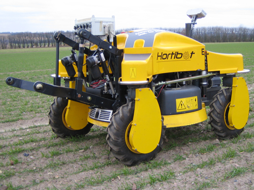

A robótica na área agrícola
Equipe A fazenda
Pedro Henrique Baggio Vieira
Pedro Henrique Silva Pinheiro
Zair Henrique Scremin
Quando surgiu
Como é aplicada atualmente
Pontos positivos e negativos
fabricantes no cenário mundial
Impactos no Brasil
Conclusão